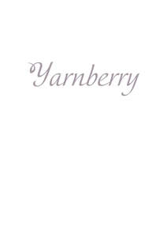

Trade Mark Journal No.2025/011 14 March 2025
UK00004168191 3 March 2025 (22,23,24,25)

- Class 22
- Laundry bags; Laundry wash bags; Mesh bags for washing laundry; Cloth bags for laundry [not for luggage or travel]; Canvas bags for laundry [not for luggage or travel]; Hosiery (Bags for washing -); Bags for washing hosiery; Cloth bags for storage; Cloth bags for storage [not for luggage or travel]; Mesh bags for washing lingerie; Shoe bags for storage; Canvas bags for storage [not for luggage or travel]; Bags for the storage of tea in bulk; Polypropylene bags used for the storage [not for luggage or travel]; Mail bags; Bags (Mail -); Fabric gift bags; Packaging bags [sacks] of paper for bulk storage; Mesh bags for storage; Ropes and string; nets; tents and tarpaulins; awnings of textile or synthetic materials; sails; sacks for the transport and storage of materials in bulk; padding, cushioning and stuffing materials, except of paper, cardboard, rubber or plastics; raw fibrous textile materials and substitutes therefor.
- Class 23
- Yarn; Knitting yarn; Worsted yarn; Wool yarn; Angora yarn; Knitting yarns; Chenille yarn; Chenile yarn; Spools of yarn; Cotton yarn; Sewing yarn; Worsted thread and yarn; Silk yarn; Embroidery yarn; Darning yarn; Wool thread and yarn; Rayon yarn; Jute yarn; Spun yarn; Linen yarn; Knitting yarns made of wool; Hemp yarn; Woolen thread and yarn; Woollen thread and yarn; Elastic yarn; Coir yarn; Eiderdown yarn; Hair yarn; Spun silk yarn; Synthetic yarn; Cotton thread and yarn; Twisted wool thread and yarn; Knitting yarns made of nylon; Cashmere yarns; Sewing thread and yarn; Jute thread and yarn; Twisted yarn; Rayon thread and yarn; Silk thread and yarn; Sewing yarns; Darning thread and yarn; Spun thread and yarn; Flax thread and yarn; Hand knitting yarns; Embroidery thread and yarn; Waxed yarn; Synthetic fiber thread and yarn; Hemp thread and yarn; Spun silk thread and yarn; Paper yarn [for textile use]; Ramie thread and yarn; Waste cotton yarn; Textile yarns; Linen thread and yarn; Glass fiber thread and yarn; Coir thread and yarn; Twisted cotton thread and yarn; Regenerated fiber thread and yarn [for textile use]; Carded yarns in wool for textile use; Douppioni silk yarn; Wild silk yarn; Knitting yarns made of acrylic materials; Wool base mixed thread and yarn; Elastic yarn for textile use; Raw silk yarn; Twisted silk thread and yarn; Yarn and thread for textile purposes; Elastic thread and yarn for textile use; Yarns made of angora for textile use; Carpet yarns; Semi-synthetic fiber thread and yarn [chemically treated natural fiber yarn]; Hand spun silk yarn; Yarns (Carded -) made of wool; Cotton threads and yarns; Camel hair yarn; Twisted hemp thread and yarn; Threads and yarns [for textile use]; Yarns (Elastic -), for use in textiles; Silk threads and yarns; Cotton base mixed thread and yarn; True hemp thread and yarn; Yarns made of cotton; Yarns for textile use; Yarns and threads; Yarns, threads; Silk base mixed thread and yarn; Carded yarns of hemp for textile use; Yarns made of silk; Hand knitting wools; Yarn of synthetic or mixed fibres for use in textiles; Chemical fiber base mixed thread and yarn; Hemp threads and yarns; Elastic yarns for textile use; Covered rubber thread and yarn [for textile use]; Yarns and threads for textile use; Carded yarns in natural fibres for textile use; Inorganic fiber base mixed thread and yarn; Hemp base mixed thread and yarn; Twisted mixed thread and yarn; Knitting threads; Chemical-fiber threads and yarns for textile use; Polyester textured yarns; Ceramic fibre yarns for textile use; Silica yarns; Glass yarns for textile use.
- Class 24
- Towel sheet; Turkish towel; Towels; Quilts of towel; Textiles and substitutes for textiles; household linen; curtains of textile or plastic; Bath wrap towels; Kitchen towels of cloth; Bath towels; Bathroom towels; Dish towels; Kitchen towels; Glass cloths [towels]; Dish towels for drying; Hand towels; Terry towels; Bath sheets (towels); Hooded towels; Face towels; Tea towels; Beach towels; Yoga towels; Turban towels for drying hair; Large bath towels; Face cloths of towelling; Kitchen towels [textile]; Kitchen towels of textile; Textile face towels; Face towels of textile; Hand towels of textile; Towels [textile] for the beach; Turkish towels; Towels of textile; Towels [textile]; Towels [of textile]; Face towels of textiles; Textile hair drying towels; Towels [textile] for kitchen use; Cloth napkins; Japanese cotton towels (tenugui); Golf towels; Towels of textiles; Glass-cloth [towels]; Bath linen; Textile exercise towels; Bed linen of paper; Household linen, including face towels; Tea cloths; Bath gloves; Washing mitts for toilet use; Linen cloth; Children's towels; Bath mitts; Make-up (Napkins for removing -) [cloth]; Cloth napkins for removing make-up; Make-up removal towels [textile] other than impregnated with toilet preparations.
- Class 25
- Clothing; Knitwear [clothing]; Jackets [clothing]; Ready-to-wear clothing; Woolen clothing; Furs [clothing]; Layettes [clothing]; Clothing layettes; Garments for protecting clothing; Linen clothing; Headbands [clothing]; Headbands for clothing; Gloves [clothing]; Gloves as clothing; Clothes; Aprons [clothing]; Maternity clothing; Kerchiefs [clothing]; Jerseys [clothing]; Shorts [clothing]; Denims [clothing]; Cashmere clothing; Capes (clothing); Oilskins [clothing]; Gabardines [clothing]; Leather clothing; Clothing of leather; Leather (Clothing of -); Silk clothing; Collars [clothing]; Parts of clothing, footwear and headgear; Veils [clothing]; Knitted clothing; Windproof clothing; Hoods [clothing]; Corsets [clothing, foundation garments]; Embroidered clothing; Wristbands [clothing]; Belts [clothing]; Belts for clothing; Bandeaux [clothing]; Rainproof clothing; Casual clothing; Waterproof clothing; Visors [clothing]; Jackets being sports clothing; Jackets (Stuff -) [clothing]; Stuff jackets [clothing]; Bottoms [clothing]; Playsuits [clothing]; Clothing for leisure wear; Ready-made clothing; Trunks being clothing; Latex clothing; Woven clothing; Infant clothing; Leisure clothing; Ties [clothing]; Drawers [clothing]; Drawers as clothing; Clothing for sports; Sports clothing; Athletic clothing; Clothing for children; Muffs [clothing]; Clothing for babies; Bodies [clothing]; Clothing for infants; Tops [clothing]; Clothing for cycling; Weatherproof clothing; Pockets for clothing; Water-resistant clothing; Fabric belts [clothing]; Triathlon clothing; Handwarmers [clothing]; Beach clothing; Clothing for skiing; Thermal clothing; Chaps (clothing); Cowls [clothing]; Men's clothing; Fishing clothing; Mitts [clothing]; Dance clothing; Braces for clothing; Plush clothing; Clothing, footwear, headwear.
Sweet Needle Industries Ltd